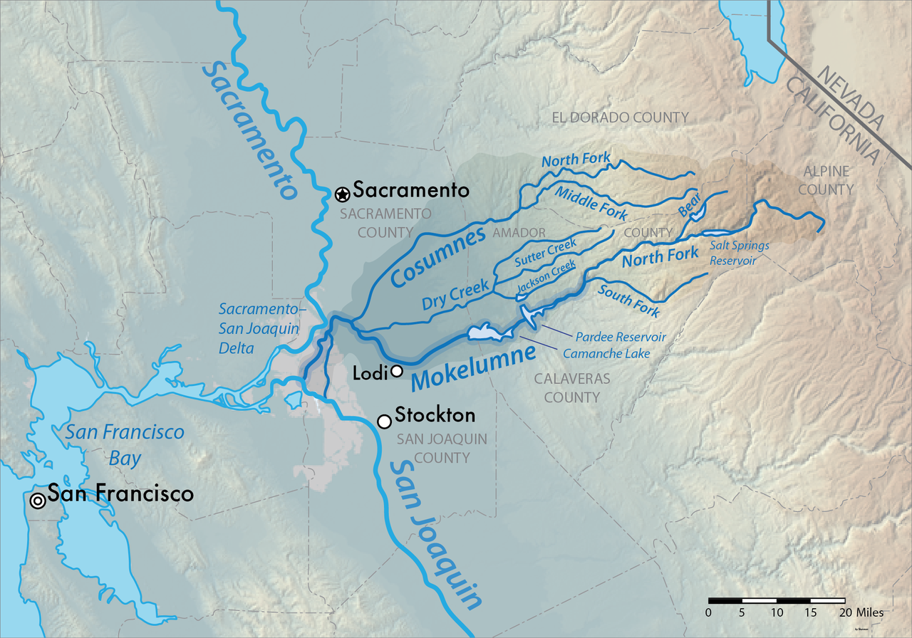
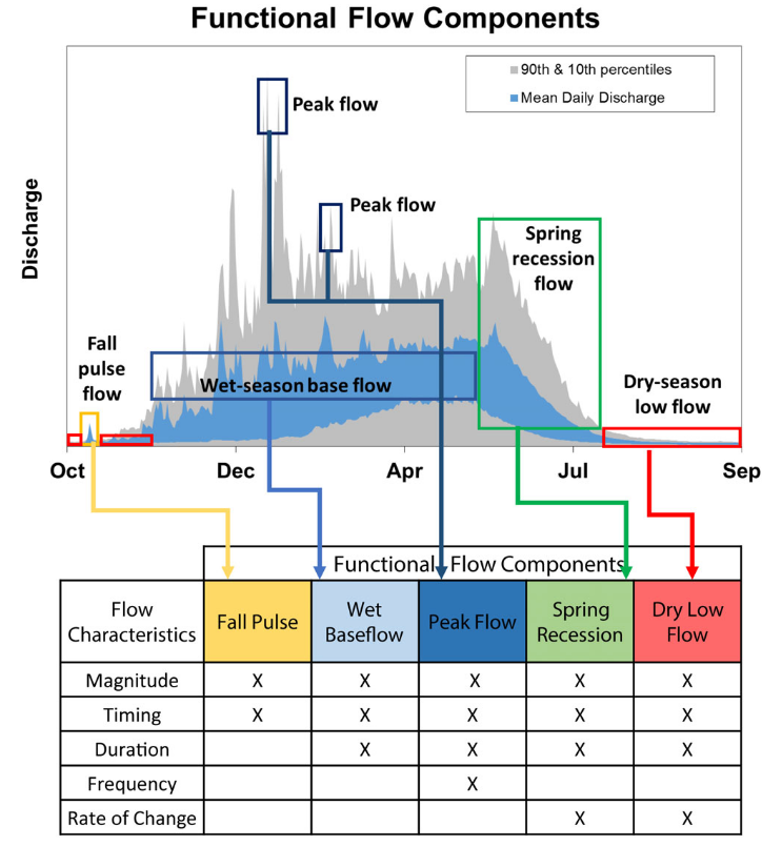
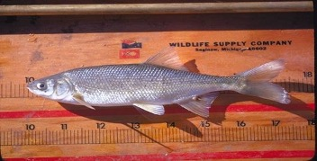
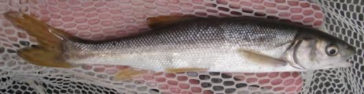
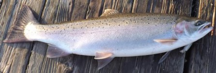

| Common Name | Scientific Name | Origin |
|---|---|---|
| Pacific Lamprey | Entosphenus tridentatus | Native |
| Delta Smelt | Hypomesus transpacificus | Native |
| Hardhead | Mylopharaodon conocephalus | Native |
| Sacramento Hitch | Lavinia exilicauda exilicauda | Native |
| Chinook Salmon (Central Valley spring run) | Onchorynchus tshawytscha pop. 6 | Native |
| Coastal Rainbow Trout (Steelhead) | Onchorynchus mykiss irrideus | Native |
| Central Valley Steelhead | Onchorynchus mykiss | Native |
| Lake Trout | Salvelinus namaycush | Nonnative |
| Black Bullhead | Ameiurus melas | Nonnative |
| Brown Bullhead | Ameiurus nebulosus | Nonnative |
| Golden Shiner | Notemigonus crysoleucas | Nonnative |
| Lahontan Redside | Richardsonius egregius | Native |
| Brown Trout | Salmo trutta | Nonnative |
| Central California Roach | Lavinia symmetricus symmetricus | Native |
| Brook Trout | Salvelinus fontinalis | Nonnative |
| Sockeye (Kokanee) Salmon | Onchorynchus nerka | Nonnative |
| Black Crappie | Pomoxis nigromaculatus | Nonnative |
| Channel Catfish | Ictalurus punctatus | Nonnative |
| Redear Sunfish | Lepomis microlophus | Nonnative |
| Riffle Sculpin | Cottus gulosus | Nonnative |
| Sacramento Pikeminnow | Ptychocheilus grandis | Native |
| Sacramento Sucker | Catostomus occidentalis occidentalis | Native |
| Smallmouth Bass | Micropterus dolomieu | Nonnative |
| Spotted Bass | Micropterus punctulatus | Nonnative |
| Threadfin Shad | Dorosoma petenence | Nonnative |
| White Catfish | Ameiurus catus | Nonnative |
| White Crappie | Pomoxis annularis | Nonnative |
| Lahontan Cutthroat Trout | Onchorynchus clarkii henshawi | Nonnative |
Mokelumne Pumped Storage Hydro Project
UW-GreenGen Collaboration
Bryan M Maitland
Goals
- Literature review evaluating the flow and temperature requirements of aquatic species
- Identify potential ecosystem co-benefits that could arise from innovative pumped-storage hydropower operations
Talk stucture
- Project background
- Aquatic habitats and biodiversity
- Environment-biodiversity-energy co-benefits
1. Background
Mokelumne River System
- moo-ka-la-mi
- “People of the Fish Net”
- River runs 95-miles (153 km) in the Sierra Nevada Mountains

Hydrology
The watershed features similar species composition, hydrologic regime, and topographic profiles to other western alpine watersheds in California.
These three watersheds are located on the western slope of the Sierra Nevada Mountain Range and are therefore primarily fed by snow melt runoff accumulated from higher elevations.

Human modifications
- 1920: Upper Mokelumne River Hydro project
- 1929: Pardee dam
- 1963: Camanche dam
- 1964: Mokelumne River Fish Hatchery (below Camanche)
- Consumes River (other major tributary) is one of only a few Sierra rivers without large dams
MR Hydroelectric Project
- Upper MR heavily damned and plumbed for hydropower since 1925 by PG&E
- 7 storage reservoirs on 90 miles of stream (4 power houses) = 204 MW capacity
- Salt Springs, Bear River (x2), Tiger Creek, several small reservoirs in headwaters
- 2 tunnels (Tiger Creek condiut, Electra tunnel) = 25 miles of piping around riverbed
- New 30-yr FERC licence in 2020 broke 28-year deadlock
- comprehensive flows for all reaches
- required mean daily temp of 20 degree C or less in 9 coldwater reaches
- flow requirements for each month of year for minimum water levels
- monthly adjustments to stream flows
- mandated pulse flows in spring
- ramping rates to limit up and downs
- limits to short-term power generation releases in summer
- no more using river as conduit for short term releases for maintenance
Mokelumne Water Battery Project
By 2030, 60 percent of CA’s energy must come from renewable resources, and by 2045, 100 percent. But wind and solar are not available all the time.
The Project will reduce California’s reliance on fossil fuels by meeting the state’s energy demands with reliable renewable energy.
It takes advantage of two existing hydroelectric reservoirs in CA’s Sierra foothills, so few environmental impacts.
Without pumped hydro, CA will have to rely on fossil fuels to integrate variable renewables (in 2018, CA curtailed ~ 460,000 MWh, enough to power 80,000 households).
Mokelumne Water Battery Project
The PSH Project is located within the Cole Creek, Bear River, Lower Bear Reservoir, and Salt Springs Reservoir – North Fork Mokelumne River watersheds.
The proposed Project will involve the Salt Springs Reservoir and Lower Bear Reservoirs, all of which are on the Mokelumne River.
Additionally, the proposed water conveyance tunnel alignments that will connect the Salt Springs and Bear Reservoirs, pass beneath Cole Creek, a tributary of the Mokelumne.

Key features
- 400 MW power capacity
- 4,000 MWh of energy capacity
- 2 reversible pump-turbines
- 8-10 hours of energy storage
- will move approx. 3,000 acre-feet of water back and forth
Benefits
- Provide carbon-free electricity, reducing GHG emissions
- Meet the state’s energy and emissions goals
- Create hundreds of construction jobs and 10 permanent jobs
- Provide local economic stimulus throughout project development and operation
Progress to date
- Jun 2008: FERC issues initial 3-yr preliminary permit to study designs
- Dec 2014: FERC refuses to extend PG&E permit to study up to 1,200-MW Mokelumne Pumped-Storage
- July 2016 - GreenGen App for another preliminary permit
- Dec 2017 - FERC-issued preliminary permit
- Spring 2022 - initial engineering report
- Fall 2021 - engineering/cultural/environmental team site visits
- April 2022 - Pre-Application Document (PAD)
- Sep 2022 - Proposed Study Plan (PSP)
- Nov 2022 - Amended PSP
- Jan 2023 - Filed Revised Study Plan (RSP) with FERC
- Feb 2023 - FERC issued Study Plan Determination (SPD)
- Spring 2023 - water temp and hydrology models begin
- Summer 2023 - field studies (difficult with snow conditions)
Environmental Impacts
- Designed to be an enhancement when constructed
- Already a stressed system (and CC will make it worse)
- Wild & Scenic River starts ½ mile downstream of Salt Springs but upstream of confluence of Mokelumne and Bear
- Model water temperature and downstream impacts from proposed operations and downstream effects
- Using Lower Bear (fewer impacts to cultural/bio resources and no new roads)
- No dam raises (no new inundation)
- footprint is 53 acres, all FS land
- 90% of facilities are underground
- 3,000 acre-feet of water back and forth (impacts on shore line)
- water rights: if they can store more water in Lower Bear, they may be able to operate project yearlong
2. Aquatic habitats and biodiversity
2a: Habitats
Salt Springs Reservoir
- owned by Pacific Gas and Electric (PG&E)
- 975 surface acre, 141,900 acre-foot storage capacity
- hydroelectric dam (332 feet, 101 m) built in 1931, filled in 1951
- hotspot for wild trout fishing in Sierra Nevadas, but now supports warmwater fishery
- Fish present in 2012 survey:
- Sacramento pikeminnow
- rainbow trout
- green sunfish
- Lahontan redside
- Sacramento sucker
NF Mokelumne River (above dam)
- Rainbow trout
- By July flows greatly diminish and the fish are under considerable stress
NF Mokelumne River (below dam)
- brown trout and rainbow trout, 7-11 inches.
- Flows on the river are heavily influenced by the dam upstream.
Bear Reservoirs
- Lower Bear River Reservoir is a 727 acre lake. 200 ft max depth, 100 ft average
- The lower lake is stocked with 13,000 rainbows and 7,200 Browns annually by DFG.
- The Bear River Resort adds 1000 lbs of trophy sized rainbows, 3-10 lbs., in early June and another 1000 lbs. in September.
- The upper lake is stocked with Kamloop Rainbow fingerlings.
- Lower Bear Reservoir gets most of the attention with all types of water activity including water skiing and sailing.
Cole Creek
- small, moderately fished creek with wild rainbows
- Most are in the 4-6 inch class.
- The creek is mostly pocket water with large boulders.
- Heavy runoff in early Spring and flows are quite thin by mid-July.
2b: Fish
Mokelumne River provides habitat for Pacific salmon and steelhead trout spawning runs. Historical migration upstream of Pardee Dam, before a natural waterfall prevented further progress. Comanche Dam has blocked access to several miles of the highest quality habitat. The Lower Mokelumne River (below Camache) is home to at least 35 species of fish.
UC Davis CalFish database queries were done by GreenGen to identify native and non-native fish present currently and/or historically within these watersheds (Table 1)
Fish of conservation concern
GreenGen ientified 6 special status species: Pacific Lamprey, Delta Smelt, Hardhead, Sacramento Hitch, Chinook salmon-central valley spring run, Steelhead.
Within the reservoirs and riverine features associated with implementation of the proposed Project, only two have potential to occur: Sacramento hitch, and hardhead.
Oncorhynchus mykiss irideus, occurs within Project watersheds as resident rainbow trout, but not as anadromous steelhead. Additional subspecies of rainbow trout are expected to occur from hatchery stocking operations. But…
Pacific lamprey, Delta smelt, and Chinook salmon do not exist in the Mokelumne River watershed above Camanche Dam.
Downstream of the immediate Project vicinity in the Lower Mokelumne River below Pardee and Camanche Reservoirs, primary species include Fall run Chinook salmon, and federally threatened California Central Valley steelhead.
Fish of conservation concern
  
2c: Herps
A variety of amphibians and reptiles use the permanent and semi-permanent aquatic habitats in the watershed and proposed Project vicinity.
A total of five special-status amphibian species and one special status reptile species as categorized by USFWS under the ESA, CDFW, and USFS are located in the proposed Project area (Table 2).
| Common Name | Scientific Name | Origin |
|---|---|---|
| Yosemite toad | Anaxyrus canorus | Native |
| Foothill yellow-legged frog | Rana boylii | Native |
| Sierra Nevada yellow-legged frog | Rana sierrae | Native |
| Southern long-toed salamander | Ambystoma macrodactylum sigillatum | Native |
| Western pond turtle | Emys marmorata / Actinemys marmorata | Native |
Next steps Goal #1
- evaluating the flow and temperature requirements of aquatic species
- use historic and simulated future stream temperature records to apply a range of identified thermal niche models/ thermal tolerance metrics at locations downstream to determine the extent to which different strategies for describing individual species thermal niche agree in habitat outcomes
- compare historic and forecasted stream temperatures to thermal criteria set by resource agencies (NMFS) and assess whether these thermal criteria are achievable/realistic in a changing climate